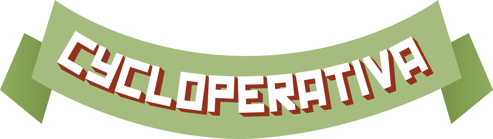
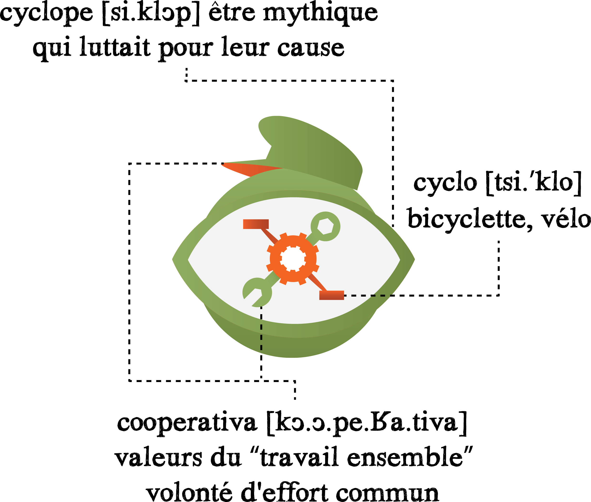
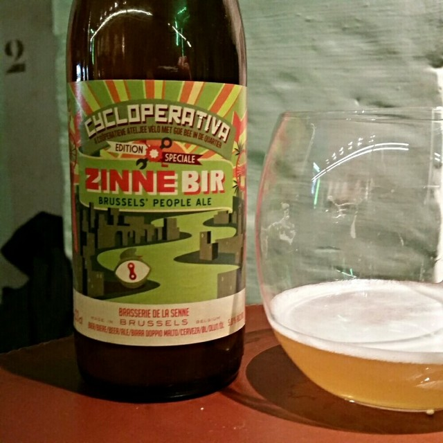

<!DOCTYPE html>
<html lang="fr">

<head>
	<meta charset="utf-8">
	<meta http-equiv="X-UA-Compatible" content="IE=edge">
	<meta name="description" content="Cycloperativa fiets atelier vélo du centre de Bruxelles, réparation, herstelling, seconde main, tweedehand">
	<meta name="viewport" content="width=device-width, initial-scale=1.0">
	<meta name="application-name" content="Cycloperativa" />

	<title>Cycloperativa 🚲✊ Brussel fiets atelier vélo de Bruxelles</title>

	<link href='https://fonts.googleapis.com/css?family=Geo' rel='stylesheet' type='text/css'>
	<link href='https://fonts.googleapis.com/css?family=Josefin+Sans' rel='stylesheet' type='text/css'>
	<link rel="stylesheet" href="https://storage.googleapis.com/code.getmdl.io/1.3.0/material.deep_orange-light_green.min.css"
	/>
	<link rel="stylesheet" href="styles.css">
	<link rel="stylesheet" href="https://fonts.googleapis.com/icon?family=Material+Icons">
	<link rel="stylesheet" href="https://maxcdn.bootstrapcdn.com/font-awesome/4.4.0/css/font-awesome.min.css">
	<link rel="apple-touch-icon-precomposed" sizes="57x57" href="http://cycloperativa.org/apple-touch-icon-57x57.png" />
	<link rel="apple-touch-icon-precomposed" sizes="114x114" href="http://cycloperativa.org/apple-touch-icon-114x114.png" />
	<link rel="apple-touch-icon-precomposed" sizes="72x72" href="http://cycloperativa.org/apple-touch-icon-72x72.png" />
	<link rel="apple-touch-icon-precomposed" sizes="144x144" href="http://cycloperativa.org/apple-touch-icon-144x144.png" />
	<link rel="apple-touch-icon-precomposed" sizes="60x60" href="http://cycloperativa.org/apple-touch-icon-60x60.png" />
	<link rel="apple-touch-icon-precomposed" sizes="120x120" href="http://cycloperativa.org/apple-touch-icon-120x120.png" />
	<link rel="apple-touch-icon-precomposed" sizes="76x76" href="http://cycloperativa.org/apple-touch-icon-76x76.png" />
	<link rel="apple-touch-icon-precomposed" sizes="152x152" href="http://cycloperativa.org/apple-touch-icon-152x152.png" />
	<link rel="icon" type="image/png" href="http://cycloperativa.org/favicon-196x196.png" sizes="196x196" />
	<link rel="icon" type="image/png" href="http://cycloperativa.org/favicon-96x96.png" sizes="96x96" />
	<link rel="icon" type="image/png" href="http://cycloperativa.org/favicon-32x32.png" sizes="32x32" />
	<link rel="icon" type="image/png" href="http://cycloperativa.org/favicon-16x16.png" sizes="16x16" />
	<link rel="icon" type="image/png" href="http://cycloperativa.org/favicon-128.png" sizes="128x128" />
	<meta name="msapplication-TileColor" content="#FFFFFF" />
	<meta name="msapplication-TileImage" content="http://cycloperativa.org/mstile-144x144.png" />
	<meta name="msapplication-square70x70logo" content="http://cycloperativa.org/mstile-70x70.png" />
	<meta name="msapplication-square150x150logo" content="http://cycloperativa.org/mstile-150x150.png" />
	<meta name="msapplication-wide310x150logo" content="http://cycloperativa.org/mstile-310x150.png" />
	<meta name="msapplication-square310x310logo" content="http://cycloperativa.org/mstile-310x310.png" />
	<script>
		(function (i, s, o, g, r, a, m) {
			i['GoogleAnalyticsObject'] = r; i[r] = i[r] || function () {
				(i[r].q = i[r].q || []).push(arguments)
			}, i[r].l = 1 * new Date(); a = s.createElement(o),
				m = s.getElementsByTagName(o)[0]; a.async = 1; a.src = g; m.parentNode.insertBefore(a, m)
		})(window, document, 'script', 'https://www.google-analytics.com/analytics.js', 'ga');
		ga('create', 'UA-73065197-1', 'auto');
		ga('send', 'pageview');
	</script>
</head>

<body>
	<!-- Google Tag Manager -->
	<noscript>
		<iframe src="//www.googletagmanager.com/ns.html?id=GTM-KMTZRF" height="0" width="0" style="display:none;visibility:hidden"></iframe>
	</noscript>
	<script>(function (w, d, s, l, i) {
			w[l] = w[l] || []; w[l].push({
				'gtm.start':
					new Date().getTime(), event: 'gtm.js'
			}); var f = d.getElementsByTagName(s)[0],
				j = d.createElement(s), dl = l != 'dataLayer' ? '&l=' + l : ''; j.async = true; j.src =
					'//www.googletagmanager.com/gtm.js?id=' + i + dl; f.parentNode.insertBefore(j, f);
		})(window, document, 'script', 'dataLayer', 'GTM-KMTZRF');
	</script>
	<!-- End Google Tag Manager -->
	<!-- Uses a header that contracts as the page scrolls down. -->
	<div class="demo-layout-waterfall mdl-layout mdl-js-layout mdl-layout--fixed-header" itemscope itemtype="http://schema.org/LocalBusiness">
		<header class="mdl-layout__header mdl-layout__header--waterfall">
			<!-- To fix on mobiles -->
			<!-- Top row, always visible -->
			<div class="mdl-layout__header-row">
				<!-- Title -->
				<span class="cyclop-title mdl-layout-title">
					<a href="#top">
						<h1 class="cyclop-title" itemprop="name">Cycloperativa</h1>
					</a>
				</span>

				<div class="cyclop-header-spacer mdl-layout-spacer"></div>

				<div class="cyclop-navigation-container">
					<nav class="cyclop-navigation mdl-navigation">
						<a class="mdl-navigation__link mdl-typography--text-uppercase" href="index.html#asbl">Het concept</a>
						<a class="mdl-navigation__link mdl-typography--text-uppercase" href="index.html#cyclopes">L’équipe</a>
						<a class="mdl-navigation__link mdl-typography--text-uppercase" href="refietsing.html">Refietsing</a>
						<a class="mdl-navigation__link mdl-typography--text-uppercase" href="index.html#bier">Bier</a>
						<a class="mdl-navigation__link mdl-typography--text-uppercase" href="index.html#contact">Contact</a>
					</nav>
				</div>
			</div>

			<!-- Bottom row, not visible on scroll -->
			<!-- <div class="mdl-layout__header-row banner-box" style="">
          <a href="fetedelacharge.html" title="Feest de la Charge 2017" target="_self" class="banner">
            <!-- Navigation -->
			<p class="banner-text">
				Feest de la Charge 5e editie
				<br>Op 16 september vanaf 17h à Place Poelaert
			</p>
			</a>
	</div> -->
	</header>

	<div class="cyclop-drawer mdl-layout__drawer">
		<span class="mdl-layout-title" itemscope itemtype="https://schema.org/Organization">
			<a itemprop="url" href="http://cycloperativa.org">
				
			</a>
		</span>
		<nav class="mdl-navigation">
			<a class="mdl-navigation__link" href="index.html#asbl">Het Concept</a>
			<a class="mdl-navigation__link" href="refietsing.html">Refietsing</a>
			<a class="mdl-navigation__link" href="carte.html">Les ateliers participatifs</a>
			<a class="mdl-navigation__link" href="index.html#atelier">Het Atelier</a>
			<a class="mdl-navigation__link" href="index.html#cyclopes">De Cyclopes</a>
			<a class="mdl-navigation__link" href="index.html#bier">Bier</a>
			<a class="mdl-navigation__link" href="index.html#agenda">Cyclopagenda</a>
			<a class="mdl-navigation__link" href="index.html#contact">Contact</a>
			<span class="social-buttons">
				<a href="https://www.facebook.com/Cycloperativa" title="Partage op Facebook" target="_blank" class="mdl-button mdl-js-ripple-effect mdl-js-button mdl-button--facebook fa-2x">
					<i class="fa fa-facebook fa-fw"></i>
				</a>
				<a href="mailto:saluke@cycloperativa.org" title="Stuur een message" target="_blank" class="mdl-button mdl-js-ripple-effect mdl-js-button mdl-button--mail fa-2x">
					<i class="fa fa-envelope-o fa-fw"></i>
				</a>
			</span>
		</nav>
	</div>

	<div class="cyclop-content mdl-layout__content">
		<section>
			<a name="top"></a>
			<div class="cyclop-be-together-section mdl-typography--text-center">
				<div class="cyclop-be-together-text" itemscope itemtype="http://schema.org/LocalBusiness">
					<div class="cyclop-font cyclop-slogan" itemprop="areaServed" itemscope itemtype="http://schema.org/Organization">Het Brussels atelier vélo van de quartier Anneessens</div>
					<div class="cyclop-font cyclop-sub-slogan" itemprop="openingHours" datetime="Mo 18:00-21:00">open chaque lundi van 18h tot 21u
						<br>
						<p class="cyclop-sub-slogan cyclop-sub-location">
							<i class="material-icons">directions_bike</i>
							<span id="andere">
								<a href="carte.html" class="cyclop-sub-location" itemprop="address">rue van Arteveldestraat 124</a>
							</span>
						</p>
						<span class="mdl-tooltip mdl-tooltip--large" for="andere">Ma alleï, er zijn plein d'autres ateliers participatifs</span>
					</div>
				</div>
			</div>
		</section>

		<section>
			<div class="cyclop-asbl-section mdl-typography--text-center" itemscope itemtype="http://schema.org/BikeStore">
				<a class="push-link" name="asbl"></a>
				<h2 class="cyclop-sub-title">C’ESTKWAÇA?
					<br>WADESDA?</h2>
				<div class="mdl-grid" itemprop="description">
					<span class="asbl-info mdl-cell mdl-cell--12-col mdl-cell--middle">Cycloperativa is een association van Bruxellois(es)
						<br>waar on apprend à réparer des vélos et travailler en cooperatie Zo on lutte tegen l’impact de la domination de la voiture
						et de la competitie dans notre vi(ll)e Voor un environnement et une qualité de vie een beetje meer meilleur L'accès
						à une mobilité douce, la cohésion sociale, les savoirs locaux, la mixité du quartier zijn pour nous super belangrijk,
						vecteur de plus de solidarité et d'entraide
					</span>
				</div>
				<div class="asbl-info">Cycloperativa signifie
				</div>
				<div class="cyclop-asbl mdl-grid">
					<div class="cyclop-vzw mdl-cell mdl-cell--12-col mdl-cell--middle">
						
					</div>
				</div>
			</div>
		</section>

		<section>
			<div class="cyclop-atelier-separation">
				<a class="push-link" name="atelier"></a>
				<h2 class="cyclop-sub-title">Atelier</h2>
			</div>
			<div class="cyclop-atelier-band-text upper-text">
				<p>We hebben een lokaal in de quartier Anneessens On adore le quartier et ses habitants, car on y retrouve la vie
				</p>
				<p>
					<br>
					<br>Dans le local ou à l’extérieur, avec les kets et les peyes du quartier
					<br>On apprend samen les secrets de la mécanique du vélo
					<br>'t is le principe d'un atelier participatif et bénévole
					<p>
						<br>
						<br>Notre objectif, c'est la vélonomie, le pouvoir par le vélo via :
						<br>la recuperatie, le tweedehands materiaal, le travail manuel
						<br>do-it-jezef maar ensemble met nos outils, notre expérience, notre biblio
					</p>
			</div>
			<div class="cyclop-atelier-back"></div>
			<div class="cyclop-atelier-section">
				<div class="cyclop-atelier-band">
					<div class="cyclop-atelier-band-text lower-text">
						<p>L'espace et l'utilisation des outils sont gratuits, les composants neufs (chambre à air, freins, câbles, ...) sont
							bon marché et on fonctionne avec prix libres pour les pièces d'occase, selon l'état Het is ook mogelijk de retaper
							un vélo pour pas trop cher ! p
							<br>
							<br>Het is ook un endroit pour discuter avec une bier ou un jus brusseleir
							<br>En beter, bougeren we ook dans tous les coins (de Bruxelles)
							<br>Les mercredis après-midi, nous aidons des associations jeunesse
							<br>En ook tijdens des events : Alternatiba, Fête de la Charge,
							<br>Pimp my Bike, Marché Vélo, Zondag sans voiture</p>
					</div>
				</div>
			</div>
		</section>

		<section>
			<div class="cyclop-cyclopes-section">
				<a class="push-link" name="cyclopes"></a>
				<div class="cyclop-cyclopes-bad">
					<div class="cyclop-cyclopes-band-text">
						<h2 class="cyclop-sub-title">De Cyclopes</h2>
						<p>L’asbl functioneert met une équipe de bénévoles où tout est décidé ensemble.
							<br>À chacun selon ses envies, son temps, ses compétences. Iedereen mag z'n zegje doen
							<br>En natuurlijk, tous ceux qui aiment le vélo zijn welkom !
						</p>
						<h3 class="cyclop-sub-sub">Une équipe de bénévoles</h3>
						<p>Inès, Benjamin, Sem, Ciske, Caspar, Yannick, Jeroen, Sacha, Marie, Grégoire, Juan, Mark, Shupon, Marcel, Sandrine,
							Baven et Charon
						</p>
					</div>
				</div>
			</div>
		</section>

		<section>
			<div class="cyclop-customized-section">
				<a class="push-link" name="bier"></a>
				<div class="cyclop-customized-section-text">
					<h2 class="cyclop-sub-title">Bier</h2>
					<p itemscope itemtype="http://schema.org/Product">La promotion de produits locaux, 't is tof, surtout si ça permet de faire vivre l'asbl !
						<br>
						<br>Dan, quoi de mieux que de vendre une gecustomizeerde
						<span itemprop="name">bier</span> van de
						<span itemprop="manufacturer">Brasserie de la Senne</span> ?
						<br>
						<br>Et pour fêter notre nouveau logo, on vend aussi des t-shirts, des badges et des stickers avec la Cycloperativa dessus
						!
					</p>
					<a href="https://docs.google.com/forms/d/1MIyucpBN1bP7539oWsnpMbqppr_gBYUHbKrF874OhTU/viewform?c=0&w=1">
						
						<span class="cyclop-sub-title mdl-button mdl-button--raised mdl-button--soutien" style="padding: 0.5rem 2.5rem" target="_blank">
							<i class="fa fa-shopping-cart fa-fw"></i>
							Koop maar des bières
						</span>
					</a>
				</div>
			</div>
		</section>

		<section>
			<div class="cyclop-more-section">
				<a class="push-link" name="agenda"></a>
				<h2 class="cyclop-sub-title">Cyclopagenda</h2>
				<div class="cyclop-atelier-band-text lower-text">
					<p>Buiten l’atelier, we zijn natuurlijk des cyclistes. Chacun son vélo-boulot-vélo-dodo-vélo.
						<br>Fietsen, ça fout la patate, même que ça encourage la créativité.
						<br>
						<br>Nous sommes pour une culture de la mobiliteit douce et joyeuse.
						<br>Et pour les savoirs-faires et les produits locaux.
						<br>Omda' ça dynamise la vie de quartier et ça stimule les intéractions.
						<br>
						<br>Entre manneke et meisje, pei et mamy, sous la drache ou qu'il fasse douf.
						<br>Er is altijd une occasion de faire la fête, de babbeler ou de se cultiver.
					</p>
				</div>
				<div class="cyclop-event-container mdl-grid">
					<div class="mdl-cell mdl-cell--3-col mdl-cell--4-col-tablet mdl-cell--4-col-phone mdl-shadow--3dp cyclop-event-box">
						<div class="mdl-cell mdl-cell--12-col mdl-color-text--white cyclop-event-title">
							<h4 class="cyclop-event-title-font">Atelier</h4>
						</div>
						<div class="mdl-cell mdl-cell--12-col mdl-color-text--white cyclop-event-place">
							<p class="cyclop-event-title-font">Cycloperativa</p>
						</div>
						<div class="mdl-cell mdl-cell--12-col mdl-color-text--black cyclop-event-date">
							<p class="cyclop-event-date-font">
								Lundis/s'Maandag
								<br> de 18h tot 21u
							</p>
						</div>
						<div class="mdl-cell mdl-cell--12-col cyclop-event-button">
							<a class="mdl-button mdl-js-button mdl-js-ripple-effect button-event" href="https://www.facebook.com/Cycloperativa" target="_blank">
								<i class="material-icons">event</i> Viens peï !
							</a>
						</div>
					</div>

					<div class="mdl-cell mdl-cell--3-col mdl-cell--4-col-tablet mdl-cell--4-col-phone mdl-shadow--3dp cyclop-event-box">
						<div class="mdl-cell mdl-cell--12-col mdl-color-text--white cyclop-event-title">
							<h4 class="cyclop-event-title-font">Refietsing #2</h4>
						</div>
						<div class="mdl-cell mdl-cell--12-col mdl-color-text--white cyclop-event-place">
							<p class="cyclop-event-title-font">Bij nous</p>
						</div>
						<div class="mdl-cell mdl-cell--12-col mdl-color-text--black cyclop-event-date">
							<p class="cyclop-event-date-font">
								19/05
								<br>vanaf 17h30
							</p>
						</div>
						<div class="mdl-cell mdl-cell--12-col cyclop-event-button">
							<a class="mdl-button mdl-js-button mdl-js-ripple-effect button-event" href="https://refietsing2.eventbrite.com" target="_blank">
								<i class="material-icons">event</i> Kom gamin !
							</a>
						</div>
					</div>

					<div class="mdl-cell mdl-cell--3-col mdl-cell--4-col-tablet mdl-cell--4-col-phone mdl-shadow--3dp cyclop-event-box">
						<div class="mdl-cell mdl-cell--12-col mdl-color-text--white cyclop-event-title">
							<h4 class="cyclop-event-title-font">Bike Experience</h4>
						</div>
						<div class="mdl-cell mdl-cell--12-col mdl-color-text--white cyclop-event-place">
							<p class="cyclop-event-title-font">Flagey</p>
						</div>
						<div class="mdl-cell mdl-cell--12-col mdl-color-text--black cyclop-event-date">
							<p class="cyclop-event-date-font">
								19/05
								<br>vanaf 17h
							</p>
						</div>
						<div class="mdl-cell mdl-cell--12-col cyclop-event-button">
							<a class="mdl-button mdl-js-button mdl-js-ripple-effect button-event" href="http://www.provelo.org/fr/agenda/event/vivez-bike-experience"
							 target="_blank">
								<i class="material-icons">event</i> Allé, kom !
							</a>
						</div>
					</div>

					<div class="mdl-cell mdl-cell--3-col mdl-cell--4-col-tablet mdl-cell--4-col-phone mdl-shadow--3dp cyclop-event-box">
						<div class="mdl-cell mdl-cell--12-col mdl-color-text--white cyclop-event-title">
							<h4 class="cyclop-event-title-font">Critical Mass</h4>
						</div>
						<div class="mdl-cell mdl-cell--12-col mdl-color-text--white cyclop-event-place">
							<p class="cyclop-event-title-font">Poort de Namur</p>
						</div>
						<div class="mdl-cell mdl-cell--12-col mdl-color-text--black cyclop-event-date">
							<p class="cyclop-event-date-font">
								28/05
								<br>vanaf 18h
							</p>
						</div>
						<div class="mdl-cell mdl-cell--12-col cyclop-event-button">
							<a class="mdl-button mdl-js-button mdl-js-ripple-effect button-event" href="https://www.facebook.com/events/929108450539490/"
							 target="_blank">
								<i class="material-icons">event</i> Viens ket !
							</a>
						</div>
					</div>

				</div>
			</div>
		</section>

		<section>
			<div class="cyclop-customized-section">
				<a class="push-link" name="contact"></a>
				<h2 class="cyclop-sub-title">Contact</h2>
				<div class="mdl-grid" style="max-width: 1044px">
					<div class="mdl-cell mdl-cell--6-col cyclop-sub-slogan contact">
						<div class="mdl-grid">
							<div class="mdl-cell mdl-cell--2-col"></div>
							<div class="mdl-cell mdl-cell--10-col kontact"> open chaque lundi van 18h tot 21u
								<br> @ rue van Arteveldestraat 124
								<br> 1000 Bruxsel
								<br>
							</div>
							<div class="mdl-cell mdl-cell--2-col mdl-cell--1-col-phone" style="text-align:center">
								<a href="mailto:saluke@cycloperativa.org" title="Stuur een message" target="_blank" class="mdl-button mdl-js-ripple-effect mdl-js-button mdl-button--mail fa-fw">
									<i class="fa fa-envelope-o"></i>
								</a>
							</div>
							<div class="mdl-cell mdl-cell--10-col mdl-cell--3-col-phone">
								<span class="kontact-hidden">Kontact nous</span>
								<a href="mailto:saluke@cycloperativa.org" title="Stuur een message" target="_blank">
									saluke@cycloperativa.org
								</a>
							</div>
							<div class="mdl-cell mdl-cell--2-col mdl-cell--1-col-phone" style="text-align:center">
								<a href="https://www.facebook.com/Cycloperativa" title="Partage op Facebook" target="_blank" class="mdl-button mdl-js-ripple-effect mdl-js-button mdl-button--facebook fa-fw">
									<i class="fa fa-facebook"></i>
								</a>
							</div>
							<div class="mdl-cell mdl-cell--10-col mdl-cell--3-col-phone">
								We zijn aussi op
								<a href="https://www.facebook.com/Cycloperativa" title="Partage op Facebook" target="_blank">
									Facebook
								</a>
							</div>
						</div>
					</div>
					<div class="mdl-cell mdl-cell--6-col">
						<iframe width="100%" height="300px" class="carte" src="http://umap.openstreetmap.fr/fr/map/ateliers-participatifs_55600?scaleControl=false&miniMap=false&scrollWheelZoom=false&zoomControl=true&allowEdit=false&moreControl=false&searchControl=null&tilelayersControl=null&embedControl=null&datalayersControl=null&onLoadPanel=undefined&captionBar=false#15/50.84639/4.34413"></iframe>
					</div>
				</div>
			</div>
		</section>

		<footer class="mdl-mini-footer cyclop-footer">
			<div class="mdl-grid">
				<div class="mdl-cell mdl-cell--12-col">
					<a href="mailto:saluke@cycloperativa.org" title="Stuur een message" target="_blank" class="mdl-button mdl-js-ripple-effect mdl-js-button mdl-button--mail wfoot fa-fw"
					 style="margin: 5px">
						<i class="fa fa-envelope-o"></i>
					</a>
					<a href="https://www.facebook.com/Cycloperativa" title="Partage op Facebook" target="_blank" class="mdl-button mdl-js-ripple-effect mdl-js-button mdl-button--facebook fa-fw"
					 style="margin: 5px">
						<i class="fa fa-facebook"></i>
					</a>
				</div>
				<div class="mdl-cell mdl-cell--12-col">
					<p class="mdl-typography--font-light mdl-color-text--black">vzw Cycloperativa asbl 2015
						<br>Place du Samedi 13 - 1000 Bruxsel
						<br>IBAN : BE12 5230 8056 9992
						<br>TVA/BTW BE0502.772.675
						<br>
						<br>Illustrations
						<a href="http://klerkzgovartz.tumblr.com/" class="cyclop-link">Jean Goovaerts</a>
						Design
						<a href="https://github.com/couleurmate/cycloperativa" class="cyclop-link">couleurmate</a>
					</p>
				</div>
			</div>
		</footer>

	</div>

	</div>

	<script defer src="https://code.getmdl.io/1.3.0/material.min.js"></script>
</body>

</html>